Research
Ongoing work
I am involved in a number of international projects and collaborations. I am the PI of PISCO and co-PI of the AMUSING survey, two projects that obtain integral field spectroscopy of supernova host galaxies. I am involved in ePESSTO leading the type Ia supernova cosmology in the Near infrared and the supernova environments working groups, and serve as a member in the Targets and Alert Team. I am an external collaborator of the Dark Energy Survey supernova group, working in type II supernova cosmology. I am a full member of the Dark Energy Science Collaboration (DESC) of the LSST, and serve in the Spokesperson nominating committee. I am part of the WFIRST SIT lead by Saul Perlmutter working on the preparation of the supernova survey. I am a member of the ENGRAVE collaboration for following up gravitational waves, and involved in the spectroscopy working group. I also co-organize with Yao-Yuan Mao the Pitt-CMU Astro Lunch seminars since September 2017.
In particular, I am currently working the following projects:
Finished projects
The Photometric LSST Astronomical Time-series Classification Challenge (PLAsTiCC): Data set.
The PLAsTiCC team (Allam Jr., Bahmanyar, Biswas, Dai, Galbany et al.), 2018, arXiv:1810.00001.
The Photometric LSST Astronomical Time Series Classification Challenge (PLAsTiCC) is an open data challenge to classify simulated astronomical time-series data in preparation for observations from the Large Synoptic Survey Telescope (LSST), which will achieve first light in 2019 and commence its 10-year main survey in 2022. LSST will revolutionize our understanding of the changing sky, discovering and measuring millions of time-varying objects. In this challenge, we pose the question: how well can we classify objects in the sky that vary in brightness from simulated LSST time-series data, with all its challenges of non-representativity? In this note we explain the need for a data challenge to help classify such astronomical sources and describe the PLAsTiCC data set and Kaggle data challenge, noting that while the references are provided for context, they are not needed to participate in the challenge.
Links: Kaggle project
Core-collapse supernovae ages and metallicities from emission-line diagnostics of nearby stellar populations
Xiao, Galbany et al., 2018, Monthly Notices of the Royal Astronomical Society, accepted
Massive stars are the main objects that illuminate H II regions and they evolve quickly to end their lives in core-collapse supernovae (CCSNe). Thus it is important to investigate the association between CCSNe and H II regions. In this paper, we present emission line diagnostics of the stellar populations around nearby CCSNe, that include their host H II regions, from the PMAS/PPAK Integral-field Supernova hosts COmpilation (PISCO). We then use BPASS stellar population models to determine the age, metallicity and gas parameters for H II regions associated with CCSNe, contrasting models that consider either single star evolution alone or incorporate interacting binaries. We find binary-star models, that allow for ionizing photon loss, provide a more realistic fit to the observed CCSN hosts with metallicities that are closer to those derived from the oxygen abundance in O3N2. We also find that type II and type Ibc SNe arise from progenitor stars of similar age, mostly from 7 to 45 Myr, which corresponds to stars with masses < 20 solar mass . However these two types SNe have little preference in their host environment metallicity measured by oxygen abundance or in progenitor initial mass. We note however that at lower metallicities supernovae are more likely to be of type II.
Discovery of a strong lensed galaxy with integral field spectroscopy (2018 September)
Galbany et al., 2018, Monthly Notices of the Royal Astronomical Society, 479:262
 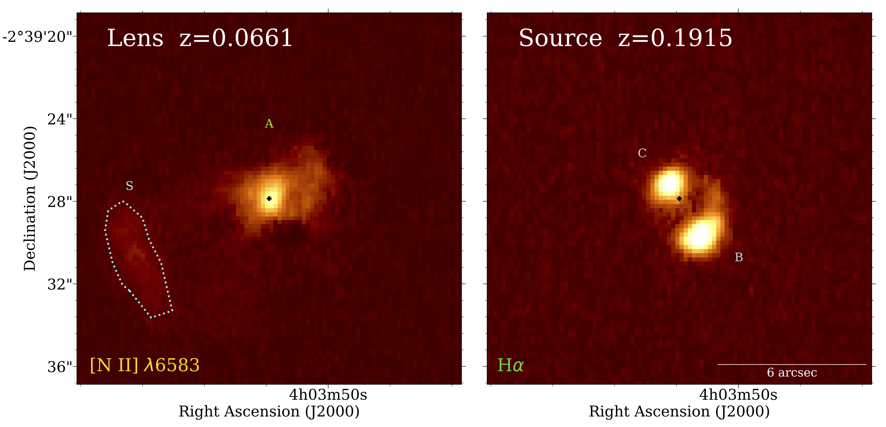
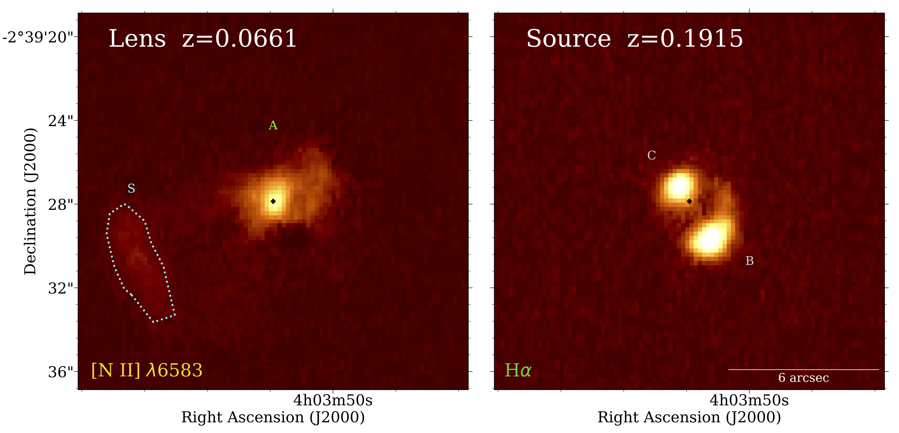
2MASX J04035024-0239275 is a bright red elliptical galaxy at redshift 0.0661 that presents two extended sources at 2\arcsec~to the north-east and 1\arcsec~to the south-west. The sizes and surface brightnesses of the two blue sources are consistent with a gravitationally-lensed background galaxy. In this paper we present MUSE observations of this galaxy from the All-weather MUse Supernova Integral-field Nearby Galaxies (AMUSING) survey, and report the discovery of a background lensed galaxy at redshift 0.1915, together with other 15 background galaxies at redshifts ranging from 0.09 to 0.9, that are not multiply imaged. We have extracted aperture spectra of the lens and all the sources and fit the stellar continuum with STARLIGHT to estimate their stellar and emission line properties.
A trace of past merger and active nucleus activity is found in the lensing galaxy, while the background lensed galaxy is found to be star-forming. Modeling the lensing potential with a singular isothermal ellipsoid, we find an Einstein radius of 1\farcs45$\pm$0\farcs04, which corresponds to 1.9 kpc at the redshift of the lens and it is much smaller than its effective radius ($r_{\rm eff}\sim$ 9\arcsec). Comparing the Einstein mass and the STARLIGHT stellar mass within the same aperture yields a dark matter fraction of $18 \% \pm 8$ \% within the Einstein radius. The advent of large surveys such as the Large Synoptic Survey Telescope (LSST) will discover a number of strong-lensed systems, and here we demonstrate how wide-field integral field spectroscopy offers an excellent approach to study them and to precisely model lensing effects.
SN 2016esw: a luminous Type II supernova observed within the first day after the explosion (2018 August)
de Jaeger, Galbany et al., 2018, Monthly Notices of the Royal Astronomical Society, 478:3776
We present photometry, spectroscopy, and host-galaxy integral-field spectroscopy of the Type II supernova (SN II) 2016esw in CGCG 229-009 from the first day after the explosion up to 120 d. Its light-curve shape is similar to that of a typical SN II; however, SN 2016esw is near the high-luminosity end of the SN II distribution, with a peak of MmaxV=−18.36 mag. The V-band light curve exhibits a long recombination phase for a SN II (similar to the long-lived plateau of SN 2004et). Considering the well-known relation between the luminosity and the plateau decline rate, SN 2016esw should have a V-band slope of ∼2.10 mag (100 d)−1; however, SN 2016esw has a substantially flatter plateau with a slope of 1.01 ± 0.26 mag (100 d)−1, perhaps indicating that interacting Type II supernovae are not useful for cosmology. At 19.5 d post-explosion, the spectrum presents a boxy H α emission line with flat absorption profiles, suggesting interaction between the ejecta and circumstellar matter. Finally, based on the spectral properties, SN 2016esw shows similarities with the luminous and interacting SN 2007pk at early epochs, particularly in terms of observable line features and their evolution.
Elemental gas-phase abundances of intermediate redshift type Ia supernova star-forming host galaxies (2018 May)
Moreno-Raya, Galbany et al., 2018, Monthly Notices of the Royal Astronomical Society, 476:307
 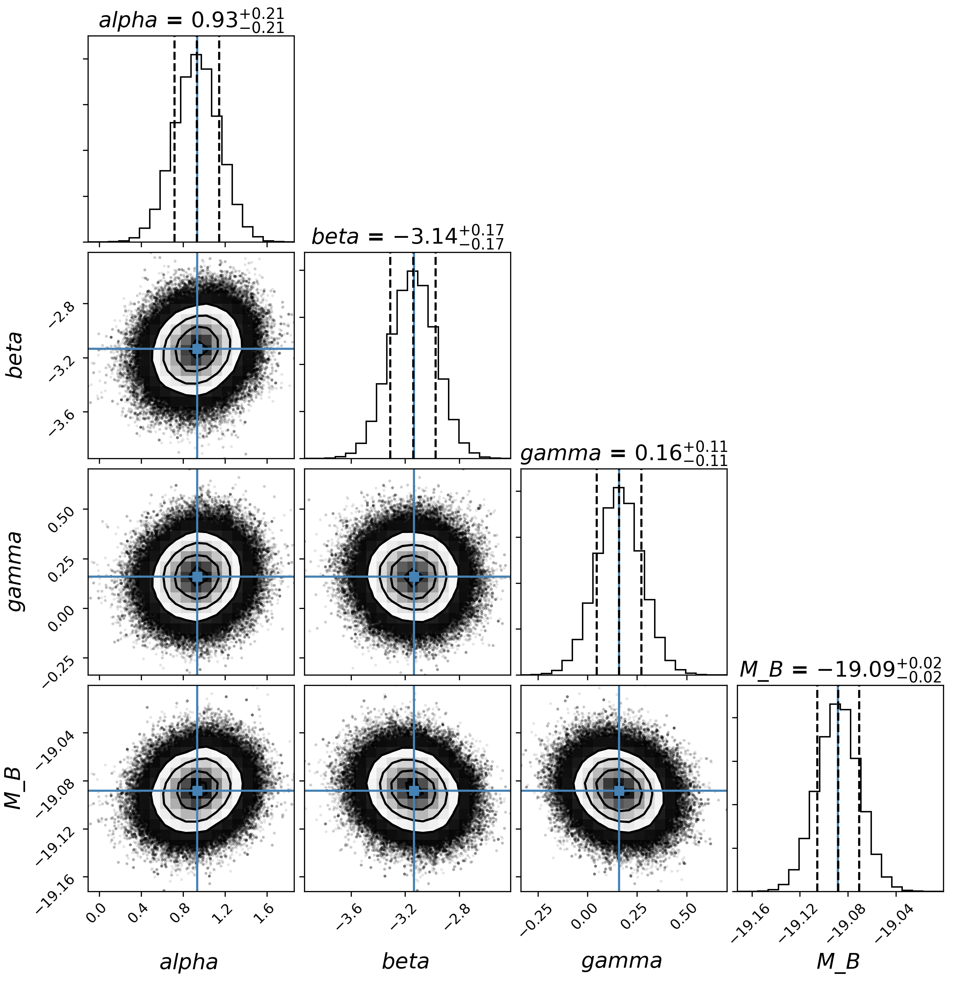
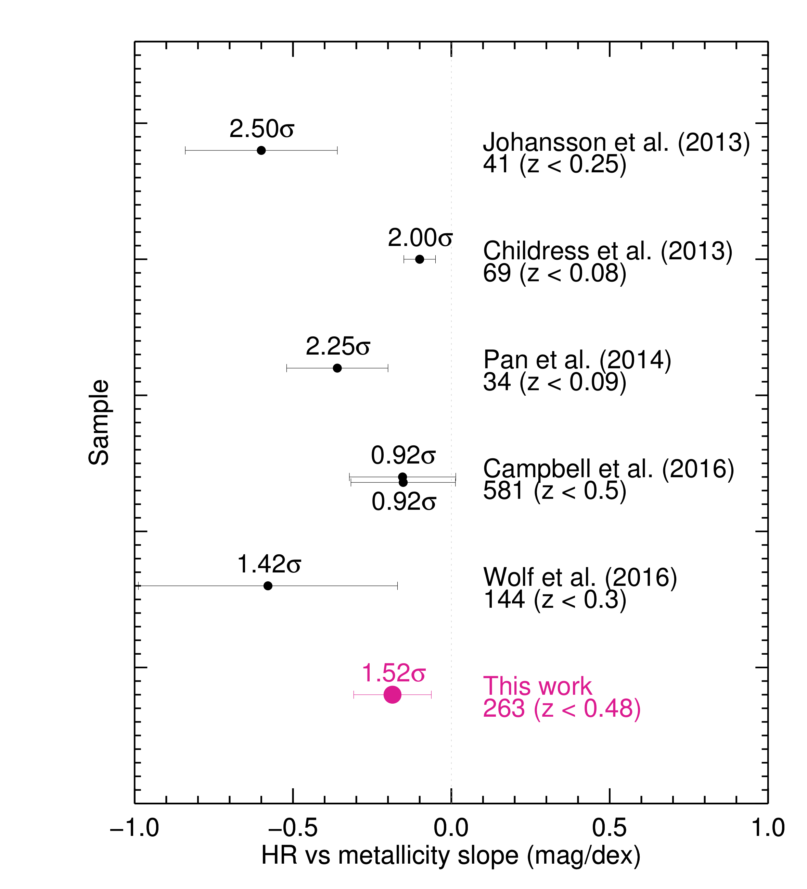
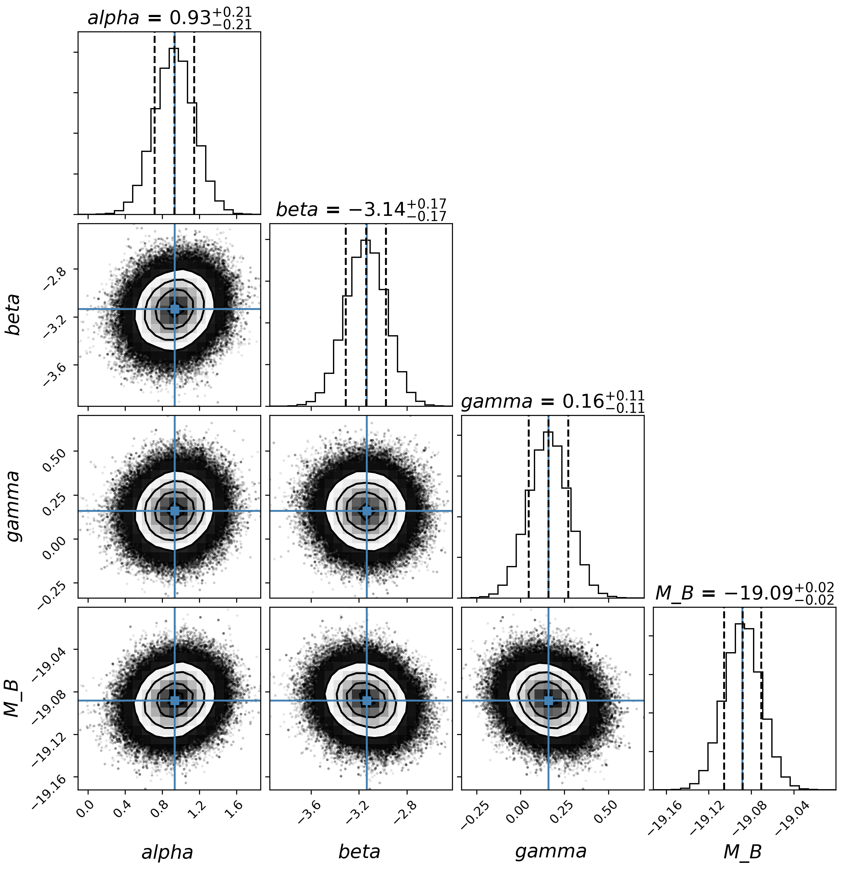
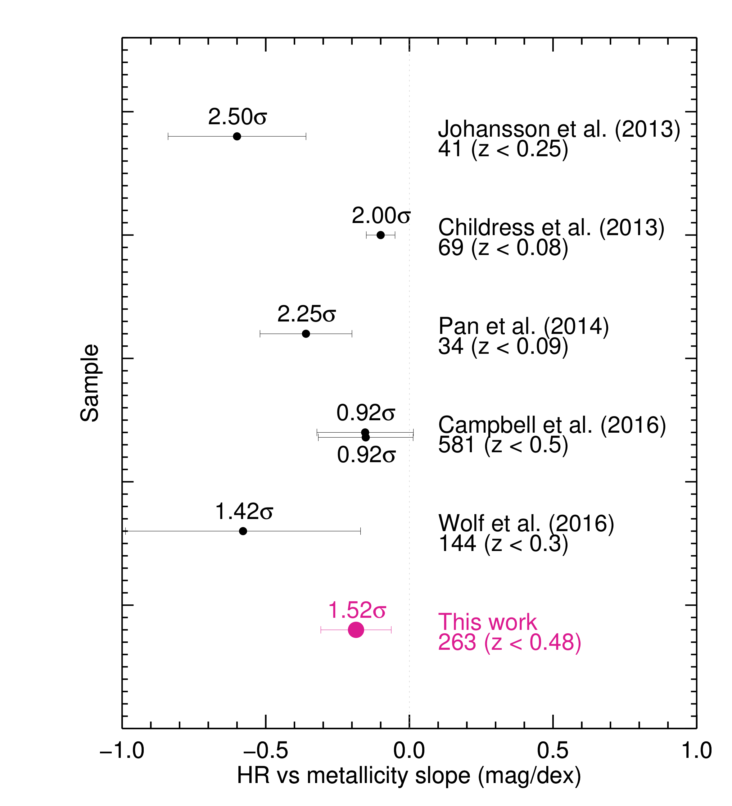
The maximum luminosity of type Ia supernovae (SNe Ia) depends on the oxygen abundance of the regions of the host galaxies, where they explode. This metallicity dependence reduces the dispersion in the Hubble diagram (HD) when included with the traditional two-parameter calibration of SN Ia light-curve parameters and absolute magnitude. In this work, we use empirical calibrations to carefully estimate the oxygen abundance of galaxies hosting SNe Ia from the SDSS-II/SN (Sloan Digital Sky Survey-II Supernova) survey at intermediate redshift by measuring their emission-line intensities. We also derive electronic temperature with the direct method for a small fraction of objects for consistency. We find a trend of decreasing oxygen abundance with increasing redshift for the most massive galaxies. Moreover, we study the dependence of the HD residuals (HR) with galaxy oxygen abundance obtaining a correlation in line with those found in other works. In particular, the HR versus oxygen abundance shows a slope of −0.186 ± 0.123 mag dex−1 (1.52σ) in good agreement with theoretical expectations. This implies smaller distance modulii after corrections for SNe Ia in metal-rich galaxies. Based on our previous results on local SNe Ia, we propose this dependence to be due to the lower luminosity of the SNe Ia produced in more metal-rich environments.
PISCO: The PMAS/Ppak Integral-field Supernova hosts COmpilation (2018 March)
Galbany et al., 2018, The Astrophisical Journal, 855:107
We present the PMAS/PPak Integral-field Supernova hosts COmpilation (PISCO) which comprises integral field spectroscopy (IFS) of 232 supernova (SN) host galaxies, that hosted 272 SNe, observed over several semesters with the 3.5m telescope at the Calar Alto Observatory (CAHA). PISCO is the largest collection of SN host galaxies observed with wide-field IFS, totaling 466,347 individual spectra covering a typical spatial resolution of $\sim$380 pc. While focused studies regarding specific SN Ia-related topics will be published elsewhere, this paper aims to present the properties of the SN environments with stellar population (SP) synthesis and the gas-phase interstellar medium, providing additional results separating stripped-envelope SNe into their subtypes. With 11,270 {\sc Hii} regions detected in all galaxies, we present for the first time an {\sc Hii} region statistical analysis, that puts {\sc Hii} regions that have hosted SNe in context with all other star forming clumps within their galaxies. SNe Ic are associated to more metal-rich, higher EW(H$\alpha$) and higher star formation rate (SFR) environments within their host galaxies than the mean of all HII regions detected within each host, on contrary SNe IIb occur at the most different environments compared to other core-collapse SNe types. We find two clear components of young and old SP at SNe IIn locations. We find that SNe II fast-decliners (IIL) tend to explode at locations where $\Sigma_{\rm SFR}$ is more intense. Finally, we outline how a future dedicated IFS survey of galaxies in parallel to an untargeted SN search would overcome the biases in current environmental studies.
Studying the Ultraviolet Spectrum of the First Spectroscopically Confirmed Supernova at redshift two
Smith, Sullivan, Nichol, Galbany et al., 2018, The Astrophisical Journal, 854:37


We present observations of DES16C2nm, the first spectroscopically confirmed hydrogen-free superluminous supernova (SLSN-I) at redshift z~2. DES16C2nm was discovered by the Dark Energy Survey (DES) Supernova Program, with follow-up photometric data from the Hubble Space Telescope, Gemini, and the European Southern Observatory Very Large Telescope supplementing the DES data. Spectroscopic observations confirm DES16C2nm to be at z=1.998, and spectroscopically similar to Gaia16apd (a SLSN-I at z=0.102), with a peak absolute magnitude of U=-22.26±0.06. The high redshift of DES16C2nm provides a unique opportunity to study the ultraviolet (UV) properties of SLSNe-I. Combining DES16C2nm with ten similar events from the literature, we show that there exists a homogeneous class of SLSNe-I in the UV (~2500A), with peak luminosities in the (rest-frame) U band, and increasing absorption to shorter wavelengths. There is no evidence that the mean photometric and spectroscopic properties of SLSNe-I differ between low (z<1) and high redshift (z>1), but there is clear evidence of diversity in the spectrum at <2000A, possibly caused by the variations in temperature between events. No significant correlations are observed between spectral line velocities and photometric luminosity. Using these data, we estimate that SLSNe-I can be discovered to z=3.8 by DES. While SLSNe-I are typically identified from their blue observed colors at low redshift (z<1), we highlight that at z>2 these events appear optically red, peaking in the observer-frame z-band. Such characteristics are critical to identify these objects with future facilities such as the Large Synoptic Survey Telescope, Euclid, and the Wide-Field Infrared Survey Telescope, which should detect such SLSNe-I to z=3.5, 3.7, and 6.6, respectively.
SN 2016jhj at redshift 0.34: extending the SN II Hubble diagram using the standard candle method (2017 December)
de Jaeger, Galbany et al., 2017, Monthly Notices of the Royal Astronomical Society, 472:4233
Although Type Ia supernova cosmology has now reached a mature state, it is important to develop as many independent methods as possible to understand the true nature of dark energy. Recent studies have shown that Type II supernovae (SNe II) offer such a path and could be used as alternative distance indicators. However, the majority of these studies were unable to extend the Hubble diagram above redshift z = 0.3 because of observational limitations. Here, we show that we are now ready to move beyond low redshifts and attempt high-redshift (z ≳ 0.3) SN II cosmology as a result of new-generation deep surveys such as the Subaru/Hyper Suprime-Cam survey. Applying the ‘standard candle method’ to SN 2016jhj (z = 0.3398 ± 0.0002; discovered by HSC) together with a low-redshift sample, we are able to construct the highest-redshift SN II Hubble diagram to date with an observed dispersion of 0.27 mag (i.e. 12–13 per cent in distance). This work demonstrates the bright future of SN II cosmology in the coming era of large, wide-field surveys like that of the Large Synoptic Survey Telescope.
Molecular gas at supernova environments unveiled by EDGE (2017 June)
Galbany et al., 2017, Monthly Notices of the Royal Astronomical Society, 468:628
CO observations allow estimations of the gas content of molecular clouds, which trace the reservoir of cold gas fuelling star formation, as well as to determine extinction via H2 column density. Here, we studied millimetric and optical properties at 26 supernovae (SNe) locations of different types in a sample of 23 nearby galaxies by combining molecular $^{12}$C$^{16}$O~({\it J} = 1 $\rightarrow$ 0)~resolved maps from the EDGE survey and optical Integral Field Spectroscopy from the CALIFA survey. We found an even clearer separation between type II and type Ibc SNe in terms of molecular gas than what we found in the optical using H$\alpha$ emission as a proxy for current SF rate, which reinforces the fact that SNe Ibc are more associated with SF-environments. While \av~at SN locations is similar for SNe II and SNe Ibc, and higher compared to SNe Ia, \nh~is significantly higher for SNe Ibc than for SNe II and SNe Ia. When compared to alternative extinction estimations directly from SN photometry and spectroscopy, we find that our SNe Ibc have also redder color excess but showed standard Na I D absorption pseudo-equivalent widths ($\sim$1 \AA). In some cases we find no extinction when estimated from the environment, but high amounts of extinction when measured from SN observations, which suggests that circumstellar material or dust sublimation may be playing a role. This work serves as a benchmark for future studies combining last generation millimeter and optical IFS instruments to reveal the local environmental properties of extragalactic SNe.
Unresolved versus resolved: calibrating young SSP models with VLT/MUSE observation of NGC 3603.
Kuncarayakti, Galbany et al., 2016, Astronomy & Astrophysics, 593:A78
 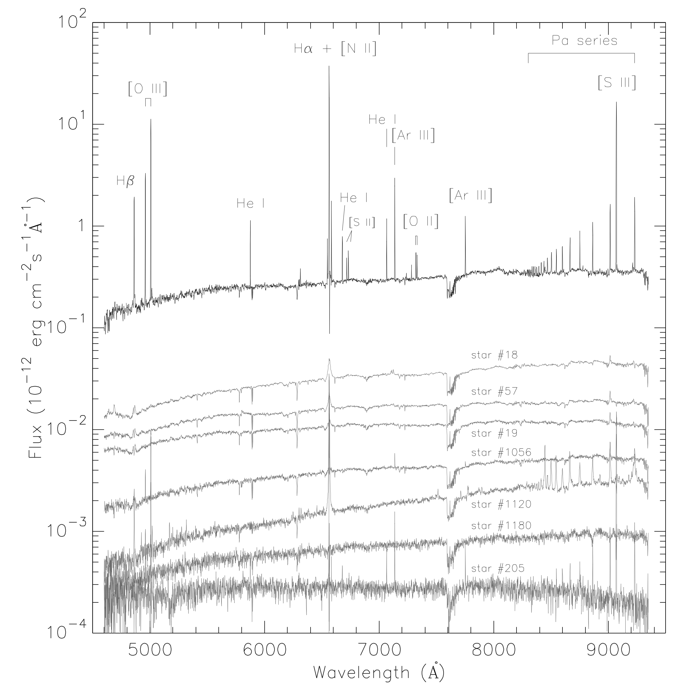
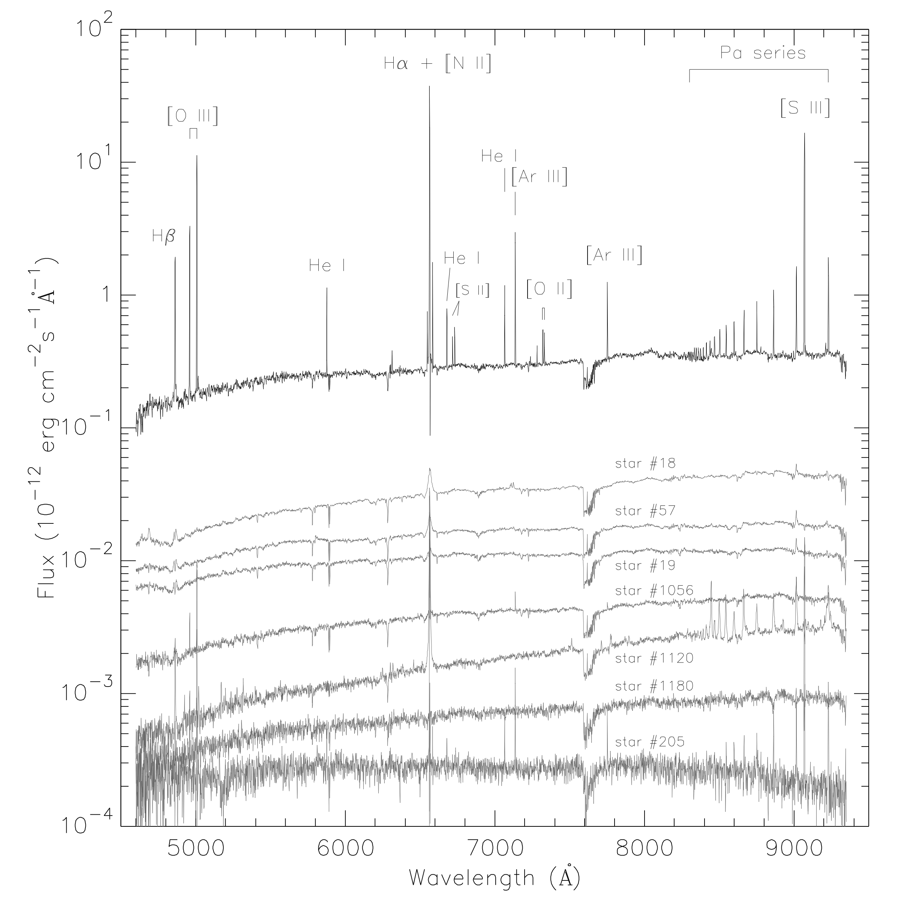
Stellar populations are the building blocks of galaxies including the Milky Way. The majority, if not all extragalactic studies are entangled with the use of stellar population models given the unresolved nature of their observation. Extragalactic systems contain multiple stellar populations with complex star formation histories. However, their study is mainly based upon the principles of simple stellar populations (SSP). Hence, it is critical to examine the validity of SSP models. This work aims to empirically test the validity of SSP models. This is done by comparing SSP models against observations of spatially resolved young stellar population in the determination of its physical properties, i.e. age and metallicity. Integral field spectroscopy of a young stellar cluster in the Milky Way, NGC 3603, is used to study the properties of the cluster both as a resolved and unresolved stellar population. The unresolved stellar population is analysed using the Hα equivalent width as an age indicator, and the ratio of strong emission lines to infer metallicity. In addition, spectral energy distribution (SED) fitting using STARLIGHT, is used to infer these properties from the integrated spectrum. Independently, the resolved stellar population is analysed using the color-magnitude diagram (CMD) for age and metallicity determination. As the SSP model represents the unresolved stellar population, the derived age and metallicity are put to test whether they agree with those derived from resolved stars. The age and metallicity estimate of NGC 3603 derived from integrated spectroscopy are confirmed to be within the range of those derived from the CMD of the resolved stellar population, including other estimates found in the literature. The result from this pilot study supports the reliability of SSP models for studying unresolved young stellar populations.
Nearby supernova host galaxies from the CALIFA Survey: II. SN environmental metallicity (2016 June)
Galbany et al., 2016, Astronomy & Astrophysics, 591:A48
The metallicity of a supernova progenitor, together with its mass, is one of the main parameters that can rule the progenitor's fate. We present the second study of nearby supernova (SN) host galaxies (0.005
SN 2014J at M82: I. A middle-class type Ia supernova by all spectroscopic metrics
Galbany et al., 2016, Monthly Notices of the Royal Astronomical Society, 457:525
We present the intensive spectroscopic follow up of the type Ia supernova (SN Ia) 2014J in the starburst galaxy M82. Twenty-seven optical spectra have been acquired from January 22nd to September 1st 2014 with the Isaac Newton (INT) and William Herschel (WHT) Telescopes. After correcting the observations for the recession velocity of M82 and for Milky Way and host galaxy extinction, we measured expansion velocities from spectral line blueshifts and pseudo-equivalent width of the strongest features in the spectra, which gives an idea on how elements are distributed within the ejecta. We position SN 2014J in the Benetti (2005), Branch et al. (2006) and Wang et al. (2009) diagrams. These diagrams are based on properties of the Si II features and provide dynamical and chemical information about the SN ejecta. The nearby SN 2011fe, which showed little evidence for reddening in its host galaxy, is shown as a reference for comparisons. SN 2014J is a border-line object between the Core-normal (CN) and Broad-line (BL) groups, which corresponds to an intermediate position between Low Velocity Gradient (LVG) and High Velocity Gradient (HVG) objects. SN 2014J follows the R(Si II)-\Delta m15 correlation, which confirms its classification as a relatively normal SN Ia. Our description of the SN Ia in terms of the evolution of the pseudo-equivalent width of various ions as well as the position in the various diagrams put this specific SN Ia into the overall sample of SN Ia.
Links: Optical INT and WHT spectra of SN 2014 can be found here
Characterising the environments of supernovae with MUSE
Galbany et al., 2016, Monthly Notices of the Royal Astronomical Society, 455:4087
We present a statistical analysis of the environments of 11 supernovae (SNe) which occurred in 6 nearby galaxies (z ≲ 0.016). All galaxies were observed with MUSE, the high spatial resolution integral field spectrograph mounted to the 8m VLT UT4. These data enable us to map the full spatial extent of host galaxies up to ∼3 effective radii. In this way, not only can one characterise the specific host environment of each SN, one can compare their properties with stellar populations within the full range of other environments within the host. We present a method that consists of selecting all HII regions found within host galaxies from 2D extinction-corrected Hα emission maps. These regions are then characterised in terms of their Hα equivalent widths, star formation rates, and oxygen abundances. Identifying HII regions spatially coincident with SN explosion sites, we are thus able to determine where within the distributions of host galaxy e.g. metallicities and ages each SN is found, thus providing new constraints on SN progenitor properties. This initial pilot study using MUSE opens the way for a revolution in SN environment studies where we are now able to study multiple environment SN progenitor dependencies using a single instrument and single pointing.
Links: 2D maps in FITS format used for these studies can be found here
UBVRIz light curves of 51 type II supernovae
Galbany et al., 2016, The Astronomical Journal, 151:33
We present a compilation of UBV RIz light curves of 51 type II supernovae discovered during the course of four different surveys during 1986 to 2003: the Cerro Tololo Supernova Survey, the Calan/Tololo Supernova Program (C&T), the Supernova Optical and Infrared Survey (SOIRS), and the Carnegie Type II Supernova Survey (CATS). The photometry is based on template-subtracted images to eliminate any potential host galaxy light contamination, and calibrated from foreground stars. This work presents these photometric data, studies the color evolution using different bands, and explores the relation between the magnitude at maximum brightness and the brightness decline parameter (s) from maximum light through the end of the recombination phase. This parameter is found to be shallower for redder bands and appears to have the best correlation in the B band. In addition, it also correlates with the plateau duration, being thus shorter (longer) for larger (smaller) s values.
Links: Machine-readable files can be found here
The rise-time of Type II supernovae
We investigate the early-time light-curves of a large sample of 223 type II supernovae (SNe) from the Sloan Digital Sky Survey and the Supernova Legacy Survey. Having a cadence of a few days and sufficient non-detections prior to explosion, we constrain rise-times, i.e. the durations from estimated first to maximum light, as a function of effective wavelength. At restframe g-band (4722A), we find a distribution of fast rise-times with median of (7.5+/-0.3) days. Comparing these durations with analytical shock models of Rabinak and Waxman (2013); Nakar and Sari (2010) and hydrodynamical models of Tominaga et al. (2009), which are mostly sensitive to progenitor radius at these epochs, we find a median characteristic radius of less than 400 solar radii. The inferred radii are on average much smaller than the radii obtained for observed red supergiants (RSG). Investigating the post-maximum slopes as a function of effective wavelength in the light of theoretical models, we find that massive hydrogen envelopes are still needed to explain the plateaus of SNe II. We therefore argue that the SN II rise-times we observe are either a) the shock cooling resulting from the core collapse of RSG with small and dense envelopes, or b) the delayed and prolonged shock breakout of the collapse of a RSG with an extended atmosphere or embedded within pre-SN circumstellar material.
Statistical studies of supernova environments

Investigations of the environments of SNe allow statistical constraints to be made on progenitor properties. We review progress that has been made in this field. Pixel statistics using tracers of e.g. star formation within galaxies show differences in the explosion sites of, in particular SNe types II and Ibc (SNe II and SNe Ibc), suggesting differences in population ages. Of particular interest is that SNe Ic are significantly more associated with H-alpha emission than SNe Ib, implying shorter lifetimes for the former. In addition, such studies have shown that the interacting SNe IIn do not explode in regions containing the most massive stars, which suggests that at least a significant fraction of their progenitors arise from the lower end of the core-collapse SN mass range. Host HII region spectroscopy has been obtained for a significant number of core-collapse events, however definitive conclusions have to-date been elusive. Single stellar evolution models predict that the fraction of SNe Ibc to SNe II should increase with increasing metallicity, due to the dependence of mass-loss rates on progenitor metallicity. We present a meta-analysis of host HII region oxygen abundances for CC SNe. It is concluded that the SN II to SN Ibc ratio shows little variation with oxygen abundance, with only a suggestion that the ratio increases in the lowest bin. Radial distributions of different SNe are discussed, where a central excess of SNe Ibc has been observed within disturbed galaxy systems, which is difficult to ascribe to metallicity or selection effects. Environment studies are evolving to enable studies at higher spatial resolutions than previously possible, while in addition the advent of wide-field integral field unit instruments allows galaxy-wide spectral analyses which will provide fruitful results to this field. Some example contemporary results are shown in that direction.
Census of HII regions in NGC6754 derived with MUSE: Constraints on the metal mixing scale
Sánchez, Galbany et al., 2015, Astronomy & Astrophysics, 573:A105
We present a study of the HII regions in the galaxy NGC 6754 from a two pointing mosaic comprising 197,637 individual spectra, using Integral Field Spectrocopy (IFS) recently acquired with the MUSE instrument during its Science Verification program. The data cover the entire galaxy out to ~2 effective radii (re ), sampling its morphological structures with unprecedented spatial resolution for a wide-field IFU. A complete census of the H ii regions limited by the atmospheric seeing conditions was derived, comprising 396 individual ionized sources. This is one of the largest and most complete catalogue of H ii regions with spectroscopic information in a single galaxy. We use this catalogue to derive the radial abundance gradient in this SBb galaxy, finding a negative gradient with a slope consistent with the characteristic value for disk galaxies recently reported. The large number of H ii regions allow us to estimate the typical mixing scale-length (rmix ~0.4 re ), which sets strong constraints on the proposed mechanisms for metal mixing in disk galaxies, like radial movements associated with bars and spiral arms, when comparing with simulations. We found evidence for an azimuthal variation of the oxygen abundance, that may be related with the radial migration. These results illustrate the unique capabilities of MUSE for the study of the enrichment mechanisms in Local Universe galaxies.
Princicpal Component Analysis of type II supernova V band light-curves
Galbany et al., 2014, IAU Symposium, 306:330
We present a Principal Component Analysis (PCA) of the V band light-curves of a sample of more than 100 nearby Core collapse supernovae (CC SNe) from Anderson et al. (2014). We used different reference epochs in order to extract the common properties of these light-curves and searched for correlations to some physical parameters such as the burning of 56Ni, and morphological light-curve parameters such as the length of the plateau, the stretch of the light-curve, and the decrements in brightness after maximum and after the plateau. We also used these similarities to create SNe II light-curve templates that will be used in the future for standardize these objects and determine cosmological distances.
Nearby SN host galaxies from the CALIFA Survey: I. Sample, data analysis, and correlation to SF regions
Galbany et al., 2014, Astronomy & Astrophysics, 572:A38
 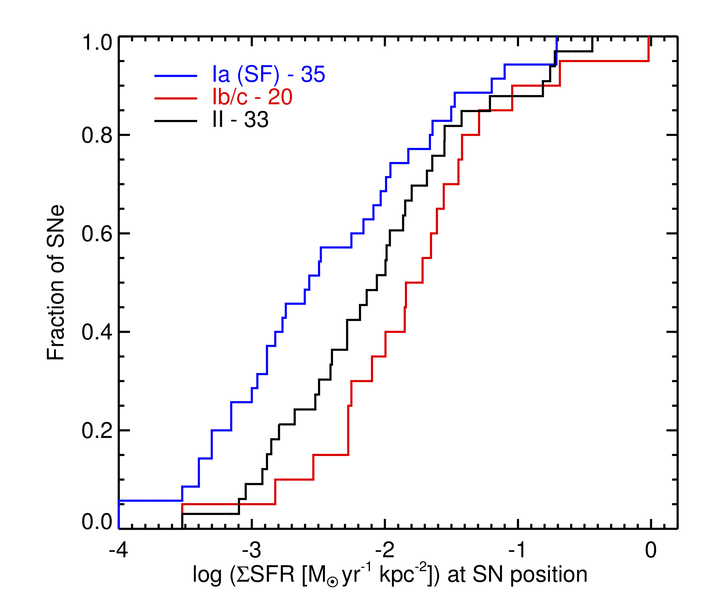
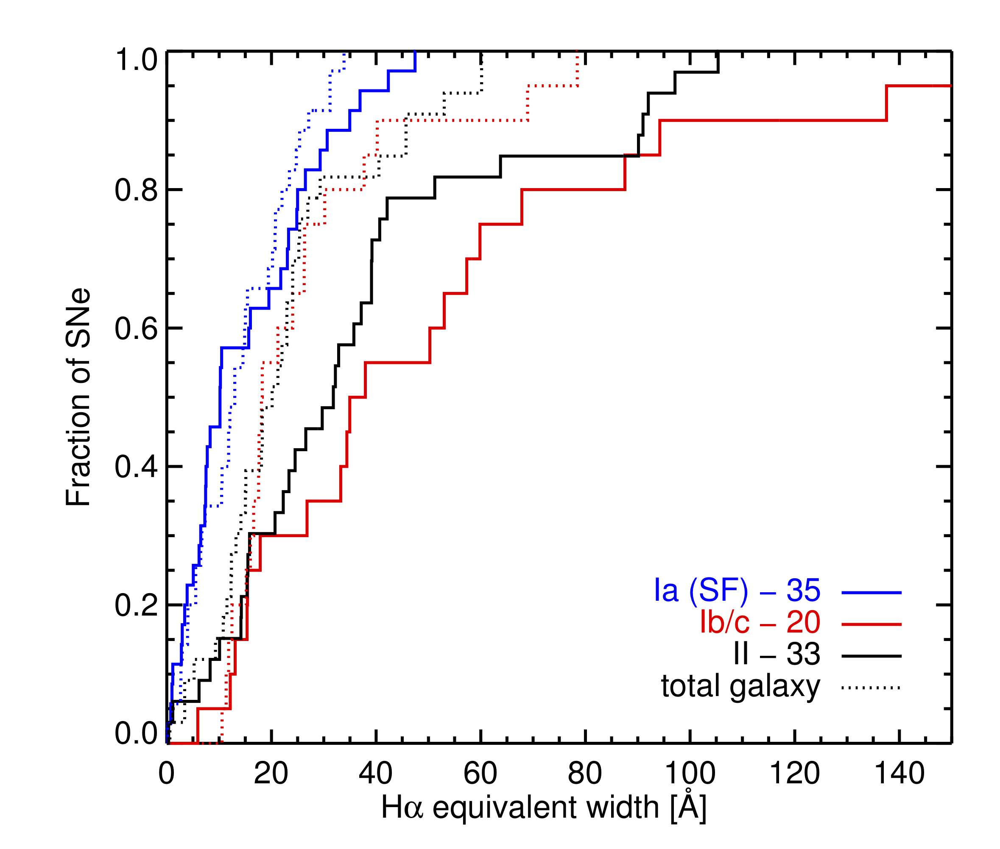
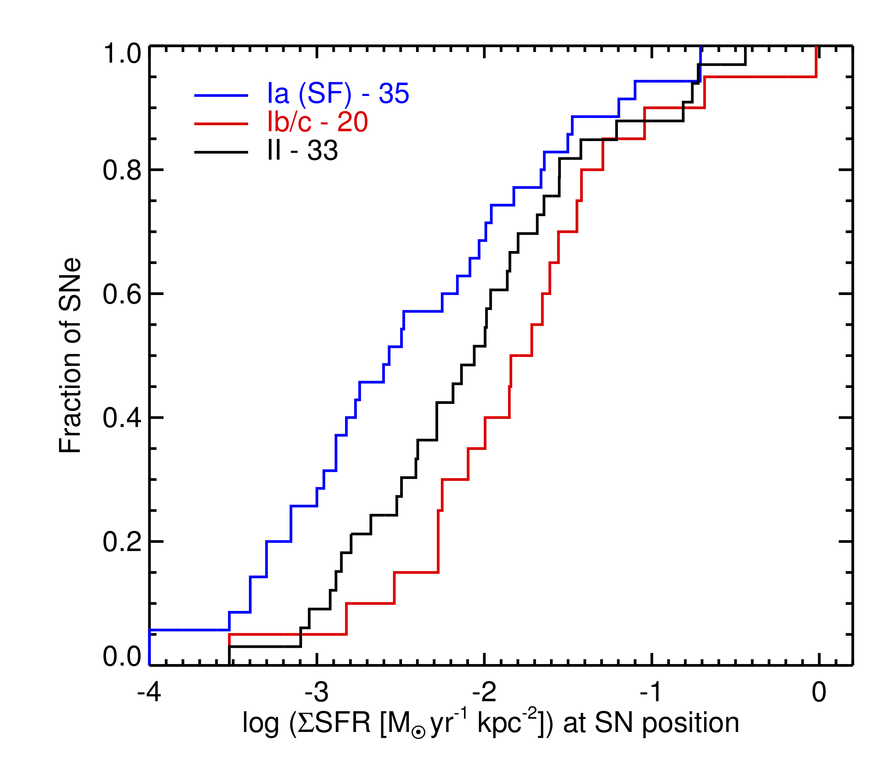
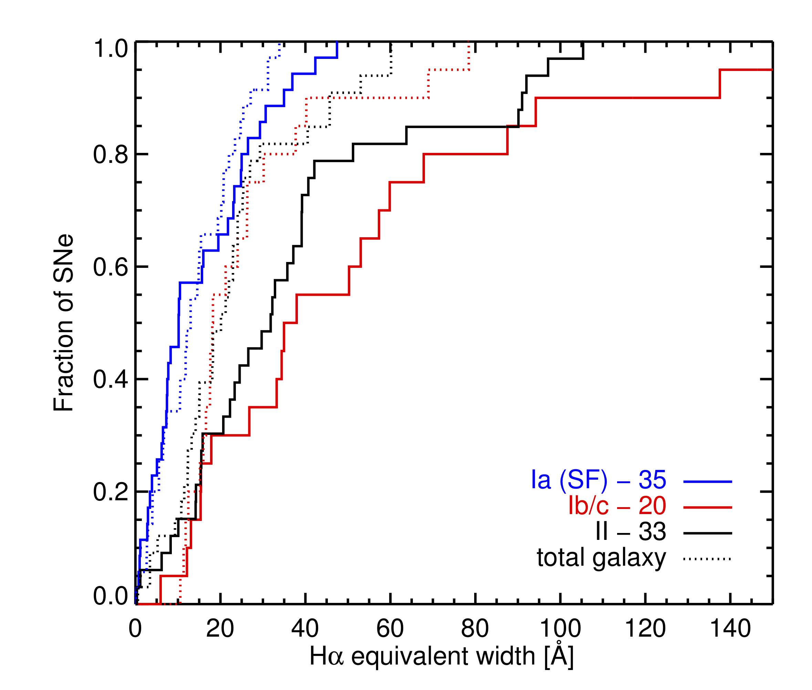
We use optical IFS of nearby SN host galaxies provided by the CALIFA Survey with the goal of finding correlations in the environmental parameters at the location of different SN types. We recover the sequence in association of different SN types to the star-forming regions by using several indicators of the ongoing and recent SF related to both the ionized gas and the stellar populations. While the total ongoing SF is on average the same for the three SN types, SNe Ibc/IIb tend to happen closer to star-forming regions and occur in higher SF density locations compared to SNe II and SNe~Ia, the latter showing the weakest correlation. SNe~Ia host galaxies have on average masses that are ∼0.3-0.8~dex higher than CC SNe hosts due to a larger fraction of old stellar populations in the SNe~Ia hosts. Using the recent SN~Ia delay-time distribution and the SFHs of the galaxies, we show that the SN~Ia hosts in our sample should presently produce a factor 2 more SNe~Ia than the CC~SN hosts. Since both types are in hosts with similar SF rate and hence similar CC~SN rate, this can explain the mass difference between the SN~Ia and CC~SN hosts, and reinforce the finding that at least part of SNe~Ia should originate from very old progenitors. Comparing the mean SFH of the eight least massive galaxies to that of the massive SF SN~Ia hosts we find that the low-mass galaxies formed their stars over more extended time than the massive SN~Ia hosts. We estimate that the low-mass galaxies should produce by a factor of 10 less SNe~Ia, and a factor of 3 less CC~SNe than the high-mass group. Therefore the ratio between the number of CC~SNe and SNe~Ia is expected to increase with decreasing the galaxy mass. CC~SNe tend to explode at positions with younger stellar populations than the galaxy average, but the galaxy properties at SNe~Ia locations are one average the same as the global ones.
Aperture corrections for galaxy properties computed from the CALIFA survey
Iglesias-Páramo, Vílchez, Galbany et al., 2013, Astronomy & Astrophysics Letters, 553:L7
This work investigates the effect of the aperture size on derived galaxy properties for which we have spatially-resolved optical spectra. We focus on some indicators of star formation activity and dust attenuation for spiral galaxies that have been widely used in previous work on galaxy evolution. We have used 104 spiral galaxies from the CALIFA survey for which 2D spectroscopy with complete spatial coverage is available. From the 3D cubes we have derived growth curves of the most conspicuous Balmer emission lines (Halpha, Hbeta) for circular apertures of different radii centered at the galaxy's nucleus after removing the underlying stellar continuum. We find that the Halpha flux (f(Halpha)) growth curve follows a well defined sequence with aperture radius showing low dispersion around the median value. From this analysis, we derive aperture corrections for galaxies in different magnitude and redshift intervals. Once stellar absorption is properly accounted for, the f(Halpha)/f(Hbeta) ratio growth curve shows a smooth decline, pointing towards the absence of differential dust attenuation as a function of radius. Aperture corrections as a function of the radius are provided in the interval [0.3,2.5]R_50. Finally, the Halpha equivalent width (EW(Halpha)) growth curve increases with the size of the aperture and shows a very large dispersion for small apertures. This large dispersion prevents the use of reliable aperture corrections for this quantity. In addition, this result suggests that separating star-forming and quiescent galaxies based on observed EW(Halpha) through small apertures is likely to result in low EW(Halpha) star-forming galaxies begin classified as quiescent.
Type-Ia Supernova properties as a function of the distance to host galaxy in the SDSS-II/SNe survey
Galbany et al., 2012, The Astrophysical Journal, 755:125
 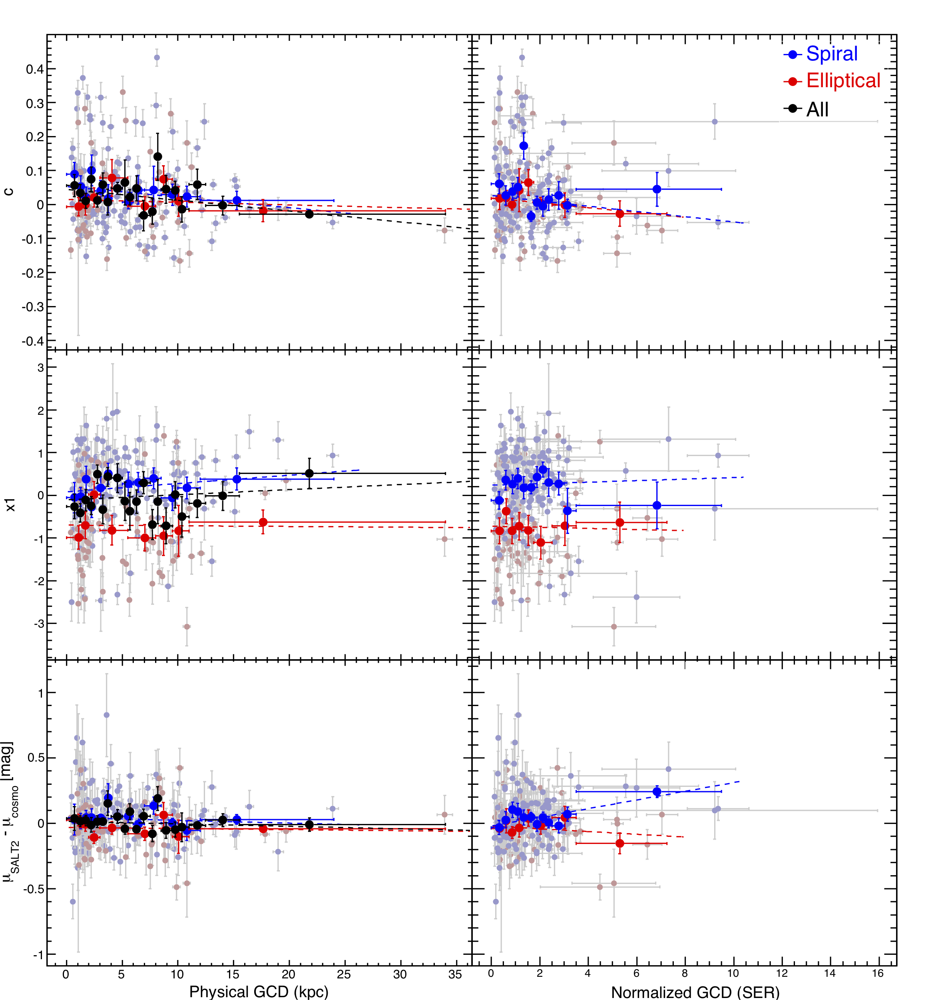
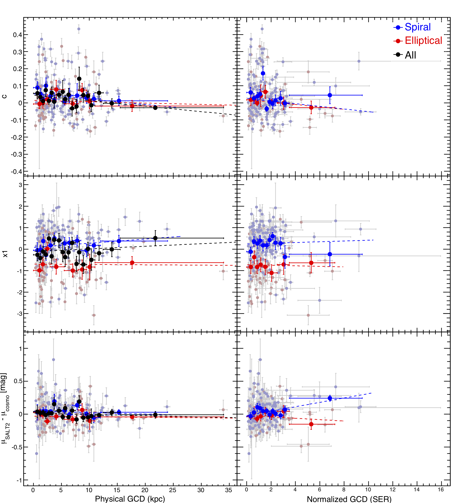
We use type-Ia supernovae (SNe Ia) discovered by the SDSS-II SN Survey to search for dependencies between SN Ia properties and the projected distance to the host galaxy center, using the distance as a proxy for local galaxy properties (local star-formation rate, local metallicity, etc.). The sample consists of almost 200 spectroscopically or photometrically confirmed SNe Ia at redshifts below 0.25. The sample is split into two groups depending on the morphology of the host galaxy. We fit light-curves using both MLCS2k2 and SALT2, and determine color (AV, c) and light-curve shape (delta, x1) parameters for each SN Ia, as well as its residual in the Hubble diagram. We then correlate these parameters with both the physical and the normalized distances to the center of the host galaxy and look for trends in the mean values and scatters of these parameters with increasing distance. The most significant (at the 4-sigma level) finding is that the average fitted AV from MLCS2k2 and c from SALT2 decrease with the projected distance for SNe Ia in spiral galaxies. We also find indications that SNe in elliptical galaxies tend to have narrower light-curves if they explode at larger distances, although this may be due to selection effects in our sample. We do not find strong correlations between the residuals of the distance moduli with respect to the Hubble flow and the galactocentric distances, which indicates a limited correlation between SN magnitudes after standardization and local host metallicity.
Links: SDSS SN Survey follow-up @TNG (html). Using GCD as a proxy for host galaxy properties (MLCS, SALT2)
The Subluminous Supernova 2007qd: A Missing Link in a Family of Low-Luminosity Type Ia Supernovae
McClelland, Garnavich, Galbany et al., 2010, The Astrophysical Journal, 720:704
 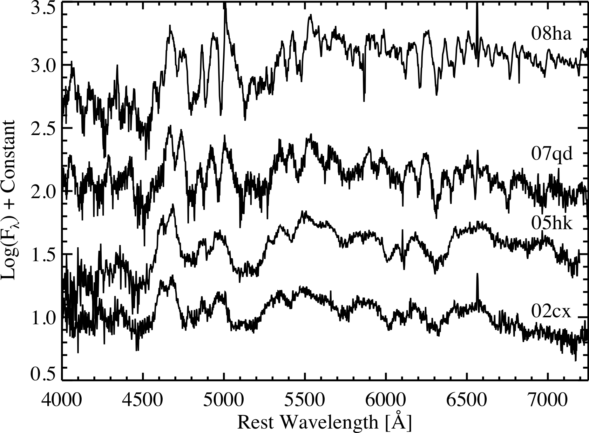
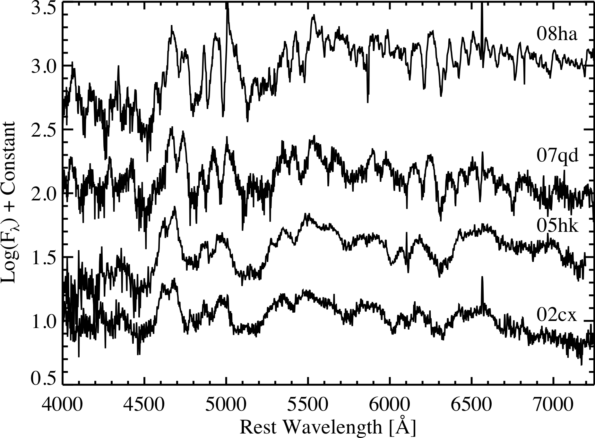
We present multi-band photometry and multi-epoch spectroscopy of the peculiar Type Ia supernova (SN Ia) 2007qd, discovered by the SDSS-II Supernova Survey. It possesses physical properties intermediate to those of the peculiar SN 2002cx and the extremely low-luminosity SN 2008ha. Optical photometry indicates that it had an extraordinarily fast rise time of <= 10 days and a peak absolute B magnitude of -15.4 +/- 0.2 at most, making it one of the most subluminous SN Ia ever observed. Follow-up spectroscopy of SN 2007qd near maximum brightness unambiguously shows the presence of intermediate-mass elements which are likely caused by carbon/oxygen nuclear burning. Near maximum brightness, SN 2007qd had a photospheric velocity of only 2800 km/s, similar to that of SN 2008ha but about 4000 and 7000 km/s less than that of SN 2002cx and normal SN Ia, respectively. We show that the peak luminosities of SN 2002cx-like objects are highly correlated with both their light-curve stretch and photospheric velocities. Its strong apparent connection to other SN 2002cx-like events suggests that SN 2007qd is also a pure deflagration of a white dwarf, although other mechanisms cannot be ruled out. It may be a critical link between SN 2008ha and the other members of the SN 2002cx-like class of objects.
PhD and Master (DEA) thesis
PhD thesis: Supernova studies in the SDSS-II/SNe Survey: spectroscopy of the peculiar SN 2007qd, and photometric properties of Type-Ia supernovae as a function of the distance to the host galaxy.
Universitat Autònoma de Barcelona, Departament de Física, 28/10/2011
Supervisor: Dr. Ramon Miquel.
Tribunal: Dr. Robert C. Nichol, Dr. Enrique Fernández, Dr. Francisco J. Castander
Bases de datos de tesis doctorales (Teseo), Ref. 936108
Master thesis: Tests of DES Charge Coupled Devices.
Universitat Autònoma de Barcelona, Departament de Física, 18/04/2008
Supervisor: Dr. Ramon Miquel, Dr. Manel Martínez.
Trib.: Dr. Eduard Massó, Dr. Enrique Fernández, Dr. Francisco J. Castander
Biblioteca de Ciència i Tecnologia (UAB), T-53 2008 Gal
Observing proposals in which I have been involved
- 2018B: ESO. Optical observations of HI-rich galaxies (PI: López-Sánchez). Service obs.
- 2018B: ESO. AMUSING VIII: CSP SNe Ia host galaxies (PI: Anderson). Service obs.
- 2018B: CTIO. NIR SNe Ia follow-up (PI: Galbany). Service obs.
- 2018B: GEM. Spectroscopic confirmation of high-z SLSNe (PI: Galbany). Service obs.
- 2018B: CAHA. The host galaxies of CSP SNe Ia (PI: Galbany). Obs: 2 nights + service obs.
- 2018A: CTIO. FFT follow-up (PI: Galbany). Service obs.
- 2018A: ESO. AMUSING VII: late-time nebular spectroscopy and environments of CCSNe II (PI: Kuncarayakti). Service obs.
- 2018A: GEM. Nebular spectroscopy of SN2017dio (PI: Galbany). Service obs.
- 2018A: AAT. IFU observations of CSP SN Ia host galaxies (PI: Galbany). Obs: 8 nights.
- 2018A: GEM. Spectroscopic confirmation of high-redshift superluminous supernovae (PI: Galbany). Service obs.
- 2018A: CAHA. IFU observations of CSP SN Ia host galaxies (PI: Galbany). Service obs.
- 2017B: GEM. New Approaches to SN Standardisation for Cosmology Classification of faint (~23 mag) SN candidates from DES (PI: Olivares). Service obs.
- 2017B: ESO. AMUSING VI:late-time nebular spectroscopy and environments of CCSNe I (PI: Kuncarayakti). Service obs.
- 2017B: LCO. New Approaches to SN Standardisation for Cosmology: Classification of faint (<22 mag) SN candidates from DES (PI: F\"orster). Service obs.
- 2017B: CAHA. Improving the use of SNe Ia as distance indicators in the NIR: Observations of SN Ia SweetSpot host galaxies (PI: Galbany). Service obs.
- 2017A: APO. Constraining SN progenitors through the characterisation of their environment. MaNGA 2017 ancillary program (PI: Galbany). Service obs.
- 2017A: CAHA. Reducing systematic effects in NIR SN Ia standardization: Observations of SN Ia SweetSpot host galaxies (PI: Galbany). Service obs.
- 2017A: ESO. AMUSING V: Host galaxy dependencies in the NIR SN Ia Hubble diagram (PI: Galbany). Service obs.
- 2017A: LCO. The first NIR spec. study of high-z (z>0.5) SNIa host galaxies FIRE spectroscopy of high-redshift SNLS SN host galaxies (PI: González-Gaitán). Service obs.
- 2016B: ESO. The All-weather MUse Supernova Integral field Nearby Galaxies (AMUSING) survey IV: Reducing the scatter in the NIR SN Ia Hubble diagram (PI: Galbany). Service obs.
- 2016B: CAHA. Reducing the scatter of SNIa standardization in the NIR (PI: Galbany). Service obs.
- 2016B: LCO. New Approaches to SN Standardisation for Cosmology (PI: Galbany). Obs: 4 nights.
- 2016B: DES/GEM. New Approaches to SN Standardisation for Cosmology (PI: González-Gaitán). Service obs.
- 2016B: LCO. The first NIR spectroscopic study of high-z (z>0.5) SNIa host galaxies (PI: Galbany). Obs: 2 nights.
- 2016A: ESO. The All-weather MUse Supernova Integral field Nearby Galaxies (AMUSING) survey III: Constraining SN progenitors through understanding the origin of NaD features (PI: Anderson). Service obs.
- 2016A: LCO. HiTS: High cadence Transient Survey, real–time detection of stellar explosions. (PI:F. Forster). Obs: 1 night.
- 2016A: LCO. Probing the CSM interaction and mass loss history of interacting supernovae via late-time spectroscopy (PI: Kuncarayakti). Obs: 1 night.
- 2016A: CAHA. Constraining supernova progenitors using the narrow Na absorption (PI: Galbany). Service obs.
- 2015B: ESO. The All-weather MUse Supernova Integral field Nearby Galaxies (AMUSING) survey II: ASAS-SN supernova rates with respect to environment properties (PI: Anderson). Service obs.
- 2015B: ESO. ePESSTO (PI: Smartt). Obs: 4 nights.
- 2015B: LCO. New Approaches to Supernova Standardisation for Cosmology (PI: González-Gaitán). Obs: 4 nights.
- 2015B: DES/GEM. New Approaches to Supernova Standardisation for Cosmology (PI: Galbany). Service obs.
- 2015B: CAHA. IFS of core collapse supernova environments in low-mass galaxies (PI: Galbany). Obs: 2 nights.
- 2015DTD:ESO. Observations of the lowest-metallicity type II supernova and its host galaxy (PI: Anderson). Service obs.
- 2015A: CTIO. HiTS Follow-up: High cadence Transient Survey follow-up of stellar explosions (PI: F. Forster). Obs: 5 nights.
- 2015A: ESO. MUSE study of nearby core-collapse supernova host environments and parent stellar populations (PI: Kuncarayakti). Obs: 4 nights.
- 2015A: ESO. (AMUSING I) MUSE observations of SNIa environments: constraining progenitor properties, and refining distance calibration techniques (PI: Anderson). Service obs.
- 2014B: ESO. Constraining progenitor Z of SNII, and exploring the scope of their use as ISM Z probes throughout the Universe (PI: Anderson). Service obs.
- 2014B: ORM. Elemental gas-phase abundances on galaxies hosting type Ia supernovae (PI: M. E. Moreno-Raya). Service obs.
- 2014B: ESO. ePESSTO (PI: Smartt). Obs: 3 nights.
- 2014B: LCO. Constrains on nearby supernova progenitors from IFU spectroscopy of the explosion site (PI: H. Kuncarayakti). Obs: 1 night.
- 2014B: CTIO. HiTS: High cadence Transient Survey, real–time detection of stellar explosions. (PI:F. Forster). Obs: 5 nights.
- 2014SV: ESO. Characterising the location of SNe within galaxies (PI: L. Galbany). Service obs.
- 2014SV: ESO. Calibrating young simple stellar population (SSP) models with MUSE (PI: H. Kuncarayakti). Service obs.
- 2014A: ORM. Elemental abundances on galaxies hosting type Ia SNe (PI: M. E. Moreno-Raya). Obs: 4 nights.
- 2013B: CAHA. the CALIFA Survey: Optical integral field spectroscopy of nearby galaxies ∼0.02 (PI: S. Sánchez). Obs: 4 nights.
- 2007B: ORM. Observations of Type-Ia Supernovae discovered by SDSS-II (PI: F. Castander). Obs: 2 nights.